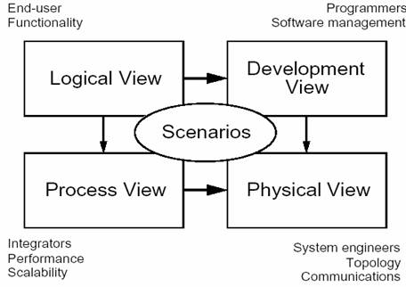

软件架构 ＝ {元素，形式，关系/约束}
软件架构涉及到抽象、分解和组合、风格和美学。我们用由多个视图或视角组成的模型来描述它。为了最终处理大型的、富有挑战性的架构，该模型包含五个主要的视图:
面向对象的分解
逻辑架构主要支持功能性需求――即在为用户提供服务方面系统所应该提供的功能。系统分解为一系列的关键抽象，（大多数）来自于问题域，表现为对象或对象类的形式。它们采用抽象、封装和继承的原理。分解并不仅仅是为了功能分析，而且用来识别遍布系统各个部分的通用机制和设计元素。
在逻辑视图中，我们认为每个对象均是主动的，具有潜在的”并发性”，即与其他对象具有”平行的”行为，我们并不考虑所要达到的确切并发程度。因此，逻辑结构所考虑的仅是需求的功能性方面。
过程分解
进程架构考虑一些非功能性的需求，如性能和可用性。它解决并发性、分布性、系统完整性、容错性的问题，以及逻辑视图的主要抽象如何与进程结构相配合在一起－即在哪个控制线程上，对象的操作被实际执行。
进程架构可以在几种层次的抽象上进行描述，每个层次针对不同的问题。在最高的层次上，进程架构可以视为一组独立执行的通信程序（叫作”processes”）的逻辑网络，它们分布在整个一组硬件资源上，这些资源通过 LAN 或者 WAN 连接起来。多个逻辑网络可能同时并存，共享相同的物理资源。例如，独立的逻辑网络可能用于支持离线系统与在线系统的分离，或者支持软件的模拟版本和测试版本的共存。
子系统分解
开发架构关注软件开发环境下实际模块的组织。软件打包成小的程序块（程序库或子系统），它们可以由一位或几位开发人员来开发。子系统可以组织成分层结构，每个层为上一层提供良好定义的接口。
系统的开发架构用模块和子系统图来表达，显示了”输出”和”输入”关系。完整的开发架构只有当所有软件元素被识别后才能加以描述。但是，可以列出控制开发架构的规则：分块、分组和可见性。
软件至硬件的映射
物理架构主要关注系统非功能性的需求，如可用性、可靠性（容错性），性能（吞吐量）和可伸缩性。软件在计算机网络或处理节点上运行，被识别的各种元素（网络、过程、任务和对象），需要被映射至不同的节点；我们希望使用不同的物理配置：一些用于开发和测试，另外一些则用于不同地点和不同客户的部署。因此软件至节点的映射需要高度的灵活性及对源代码产生最小的影响。
物理蓝图的表示法
大型系统中的物理蓝图会变得非常混乱，所以它们可以采用多种形式，有或者没有来自进程视图的映射均可。
综合所有的视图
四种视图的元素通过数量比较少的一组重要场景（更常见的是用例）进行无缝协同工作，我们为场景描述相应的脚本（对象之间和过程之间的交互序列）。正如 Rubin 和 Goldberg 所描述的那样6。
在某种意义上场景是最重要的需求抽象，它们的设计使用对象场景图和对象交互图来表示4。
该视图是其他视图的冗余（因此”＋1”），但它起到了两个作用：
作为一项驱动因素来发现架构设计过程中的架构元素，这一点将在下文中讨论。 作为架构设计结束后的一项验证和说明功能，既以视图的角度来说明又作为架构原型测试的出发点